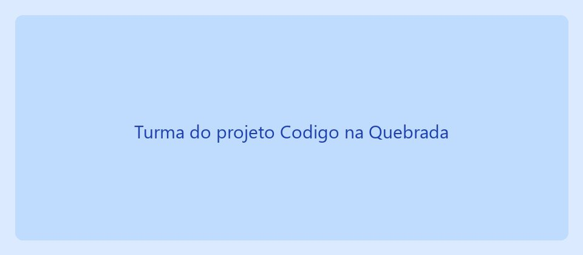
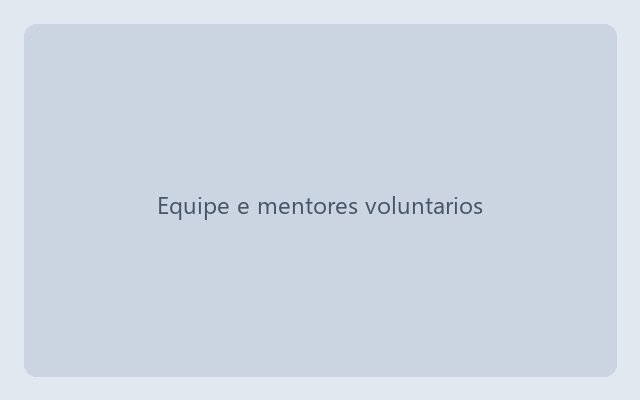

Jovens formados
412 concluintes em trilhas de desenvolvimento web e análise de dados.
O Instituto Ponte Digital forma jovens de 14 a 24 anos das regiões periféricas de Campinas (SP) em programação, dados e cidadania digital — e os acompanha até a contratação.

Somos uma organização da sociedade civil sem fins lucrativos, fundada em 2016 por educadores e profissionais de tecnologia. Atuamos em quatro bairros com turmas gratuitas, equipamento emprestado e auxílio-transporte, porque entendemos que acesso não se resolve só com aula.
Garantir que a origem do jovem não determine seu repertório técnico nem seu acesso ao mercado de trabalho.

412 concluintes em trilhas de desenvolvimento web e análise de dados.
63% dos concluintes empregados ou estagiando em até 12 meses.
128 mentores ativos distribuídos em 4 núcleos comunitários.
R$ 50 por mês cobrem o auxílio-transporte de um estudante durante um semestre letivo.
Duas horas semanais de mentoria técnica ou apoio administrativo, presencial ou a distância.
Cessão de equipamentos, bolsas de estudo ou abertura de vagas de aprendiz e estágio.